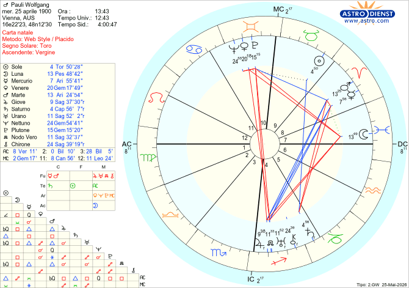

Il cielo racconta
Wolfgang Pauli
Vienna, 25 aprile 1900
⚛️TEMA NATALE DI WOLFGANG PAULI
NATO A VIENNA
IL 25/04/1900 ALLE ORE 13:43
TORO ASCENDENTE VERGINE

Wolfgang Pauli: il Nobel Spaccato in Due e il Mistero dei Macchinari Rotti
Wolfgang Pauli è stato uno dei padri della meccanica quantistica, un genio della fisica così formidabile da vincere il Premio Nobel nel 1945. Ma dietro la facciata dello scienziato impeccabile si nascondeva un uomo tormentato: un critico spietato di giorno, un frequentatore di quartieri a luci rosse di notte, ossessionato dall'alcol e dai misteri dell'inconscio.
La scienza non ha mai capito questa sua doppia vita, ma l'astrologia sì: il suo cielo natale mostrava una spaccatura identitaria impressionante.
1. Un cervello d'acciaio fatto di Terra e Fuoco
A poco più di vent'anni, Pauli scrisse un trattato sulla relatività che lasciò persino Albert Einstein a bocca aperta. Da dove arrivava questa super-mente?
La firma delle stelle: Pauli aveva l'Ascendente in Vergine, il Sole in Toro e un trigono perfetto con Saturno in Capricorno. Questa valanga di elementi di Terra dona una precisione chirurgica e una pazienza infinita nella ricerca.
Ma a dare la scintilla al genio ci pensava il Fuoco: una congiunzione esplosiva Mercurio-Marte in Ariete. Questa combinazione creava un'intelligenza velocissima e un'autostima così aggressiva che i colleghi fisici terrorizzati facevano leggere a lui i loro lavori prima di pubblicarli per paura delle sue critiche devastanti.
2. Il Nobel scritto nell'Ottava Casa (il mondo invisibile)
Pauli ha vinto il Nobel per il "Principio di Esclusione", una scoperta fondamentale sulle particelle subatomiche.
Il segreto stupefacente: La sua coppia d'assalto Mercurio-Marte si trova nella Ottava Casa, il settore astrologico dell'invisibile e dei segreti nascosti sotto la superficie.
L'universo lo aveva programmato per studiare l'atomo, cioè il regno di ciò che per definizione non si può vedere a occhio nudo. E non è tutto: la sua Sesta Casa (il lavoro) è in Acquario, il segno della tecnologia e delle rivoluzioni scientifiche.
3. La Luna ferita: scienziato di giorno, ribelle di notte
Il dramma di Pauli esplose quando sua madre si tolse la vita. Questo trauma lo spinse in una depressione profonda, curata poi attraverso una storica terapia con lo psicologo Carl Gustav Jung.
La precisione da brividi: Nel suo tema, la Luna (che rappresenta la madre e le emozioni) si trova in Pesci, il segno della massima fragilità, ed è "bombardata" da aspetti ostili di Plutone, Giove e Urano.
Questa Luna ferita ha creato una vera e propria scissione. Per compensare questo immenso dolore interiore, Pauli attivava una Venere in Gemelli schiacciata tra Plutone e Nettuno. Traduzione: il bisogno compulsivo di rifugiarsi nell'alcol e nelle case di piacere notturne per mettere a tacere i propri fantasmi.
4. Il bizzarro "Effetto Pauli": quando la fisica incontra la magia
Tra i fisici dell'epoca girava una battuta famosissima sull'"Effetto Pauli": si diceva che bastasse la semplice presenza dello scienziato in una stanza per far misteriosamente guastare o esplodere i costosissimi macchinari da laboratorio.
Il colpo di scena finale: Questa bizzarria leggendaria trova una risposta perfetta nel suo cielo: la sua Luna subiva una quadratura violentissima da Urano (il pianeta della tecnologia, dei circuiti elettrici e dei macchinari).
La tensione interiore di Pauli si proiettava all'esterno, creando un vero e proprio cortocircuito energetico con la materia circostante.
Il verdetto delle stelle
Wolfgang Pauli è stato il perfetto esempio di come l'universo distribuisca le sue carte. I pianeti di Terra hanno creato lo scienziato da Nobel, mentre una Luna in Pesci totalmente afflitta ha creato l'uomo fragile e notturno. L'astrologia ci dimostra che persino la mente più logica del mondo deve fare i conti con il disegno geometrico del proprio destino.
Ti aspettavi che un gigante della fisica quantistica avesse una mappa astrale così selvaggia e legata persino ai guasti dei macchinari dei laboratori?